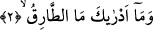
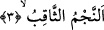

yastıklar üzerinde yürürüz”demiştir. Hind’in bu ifâdeyle kasdı bizim babalarımız şeref
ve yücelik itibariyle yıldız gibidirler demektir. Târık kelimesinin kapı çalmak anlamı
şairin şu beytinde karşımıza çıkıyor.
Ey -başlarken gece-, sevinçle yatan uykuya!
Gelir bazen felaket seherde, kader bu ya!
Evveli hoş olan geceyle ferah duyma asla
Nice gece varki, sonunda çıkar yangın karşına!
Sehl (rh) der ki: Hz. Muhammed’in kalbine zâid beyân ve nimet verme duygusu asla
gelmemiştir.
et-Te’vilâtü’n-Necmiyye’de şöyle deniyor: Burada kalb semâsına kalbî vâridâtın,
değeri büyük, burhanı güçlü, gaybî ilhamların yıldızlarının doğuşlarına işâret ediliyor.
Yukarda işâret edilen yıldızın değerinin yüceliğini vurgulamak ve ne kadar önemli
olduğunu ifâde etmek için âyet şöyle devam ediyor:
2. Târıkın ne olduğunu nereden bileceksin?
Yani târıkın ne olduğunu sana bildiren hangi şeydir? Çünkü onun mâhiyetine, herşeyi
hakkıyla bilen yaratıcı Allah’tan ilim alınmadıkça, mahlukatın kavrama yeteneği ve aklı
asla eremez. Burada âdetâ şu soru sorulmuş oluyor: Târık nedir? Ve şu cevap veriliyor:
3. (O karanlığı) delen yıldızdır.
Burada yer alan “necm” doğan yıldız demektir.
Sâkıb ve sakb; delmek, yarmak, sukûb ve sakabe ise ateş yakmak, ateşi alevlendirmek
demektir. Arapçada sakben herhangi bir şeyde delik açmak, bir menfez meydana
getirmek demektir. Ateş tutuştu ve yıldız ışık verdi, parladı demektir. Âyetteki “şihabun
sakıb” aydınlatıcı ışık veren yıldız demektir. Bu yıldızın birinci âyette “ târık” şeklinde
genel niteliğinin belirtilmesi sonra özel niteliği olan karanlıkları deliciliğinin ifâde
edilmesi şanını yüceltmek içindir. Buna göre “necmun sakıbun” ateş alevi, şası gibi son
derece parlak yıldız demektir.
Çünkü bu yıldız ışığı ile karanlıkları delmekte, kendini çepeçevre saran karanlığı ve
felekleri aydınlatmaktadır. Adeta karanlıkları delerek ışık vermektedir. Buradaki “en-